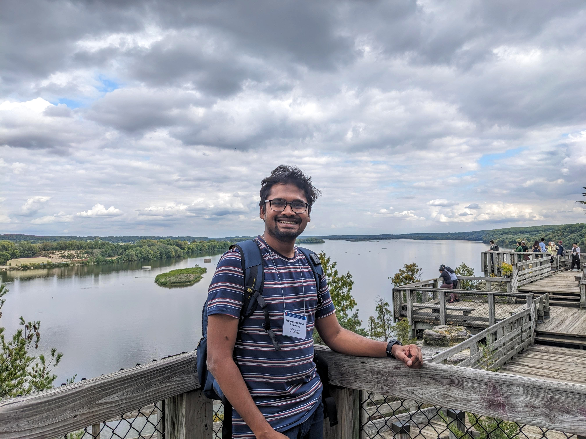

M. Kifayath Chowdhury, Ph.D.
I study how bifurcating river systems and deltas change over time, and how climate and human interventions shape them.

About
I am a river scientist interested in how rivers and deltas evolve in engineering timescale, particularly when bifurcations are present. My Ph.D. at TU Delft looked at the Upper Rhine delta, where the river bifurcates into several branches. Combining a century of measurements with a one-dimensional hydro-morphological model, I examined how flow and sediment are shared between those branches, and how that may change under future climate.
Before this, I studied three-dimensional flow structure in the Wax Lake Delta (Louisiana) during my M.Sc. at Louisiana State University. My first degree was in naval architecture and marine engineering at Bangladesh University of Engineering and Technology, Dhaka.
- Modelling of flow and sediment transport in river systems (SOBEK, Delft3D)
- Field measurements
- Long-term hydromorphological data analysis
- Python, MATLAB
- GIS and remote sensing
Research
The Lower Rhine River under climate change
A schematized hydro-morphological model of the Lower Rhine River and its branches projects how climate-driven changes in the hydrograph and sea-level shift the way flow is distributed at its bifurcations- the Pannerdense Kop and IJsselkop.
Journal of Geophysical Research: Earth Surface, 2026
Signs of tipping in a river system
With Astrid Blom and colleagues, I examined long records of a bifurcating river for signals that indicate if the system is approaching a tipping point induced by noise.
Geophysical Research Letters, 2024
Bifurcations in an engineered river
The Pannerdense Kop and IJsselkop bifurcations split the Lower Rhine River's flow between the Waal and Pannerden Canal, Nederrijn and IJssel. Using 100 years of bed-level, bed surface grain-size, water level, and discharge data, I traced how peak flows and human interventions shaped the system's development over the last century.
Water Resources Research, 2023
Flow in river deltas
Field campaigns with an acoustic Doppler current profiler at Wax Lake Delta, USA, showed how lateral outflow from distributary channels influence three-dimensional flow structure at channel-island interfaces and sediment transport.
Water Resources Research, 2022
Publications
- Climate-change projections of flow distribution across the Rhine deltaChowdhury, M. K., Blom, A., Ylla Arbós, C., & Schielen, R. M. J. (2026). Journal of Geophysical Research: Earth Surface, 131(3).
- Indications of ongoing noise-tipping of a bifurcating river systemBlom, A., Ylla Arbós, C., Chowdhury, M. K., Doelman, A., Rietkerk, M., & Schielen, R. M. J. (2024). Geophysical Research Letters, 51(22).
- Semicentennial response of a bifurcation region in an engineered river to peak flows and human interventionsChowdhury, M. K., Blom, A., Ylla Arbós, C., Verbeek, M. C., Schropp, M. H. I., & Schielen, R. M. J. (2023). Water Resources Research, 59(4).
- Effect of lateral outflow on three-dimensional flow structure in a river deltaChowdhury, M. K., Konsoer, K. M., & Hiatt, M. (2022). Water Resources Research, 58(10).
Open datasets
- Schematized model of the Lower Rhine River and its branches in SOBEK RE4TU.ResearchData, 2025
- Bed elevation, grain size and discharge of the Waal, Pannerden Channel, Nederrijn and IJssel, 1928–20204TU.ResearchData, 2023
- Effect of lateral outflow on flow structure in a river deltaFigshare, 2021
Teaching, talks and service
Teaching and mentoring
- Supervised three B.Sc. and two M.Sc. thesis projects at TU Delft
- Coordinated the field trip for the M.Sc. River Engineering track (2023–2024)
- Helped redesign the Rivers unit of the curriculum (2022–2023)
Talks and recognition
- Best Presentation Award, NCR Days 2023
- Invited talks at the NCR Summer School (2023, 2025)
- Presented at AGU Fall Meeting, RCEM and River Flow
Contact
Faculty of Civil Engineering and Geosciences, Delft University of Technology.